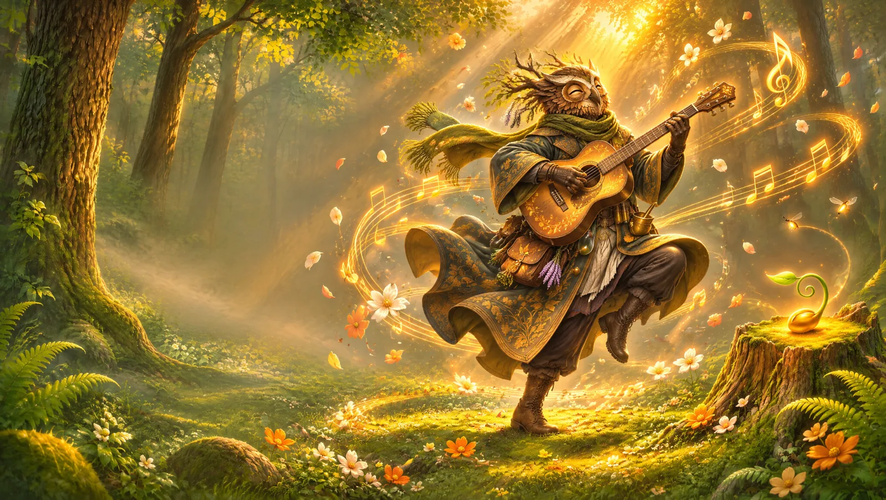

The Chordseed Journal
Songwriting, one chord at a time
Plain-language guides to chords, moods and song structure.
Moods · 6 min readSad chord progressions that always workWhy minor chords and a falling bass pull at your heart.
 Next chord · 5 min readWhat chord comes after G?The ear’s favorite moves, explained with sound.
Next chord · 5 min readWhat chord comes after G?The ear’s favorite moves, explained with sound.
Next chord · 5 min readWhat chord comes after G?The ear’s favorite moves, explained with sound.

Song structure · 6 min readThe 4 chords behind hundreds of hitsI–V–vi–IV, and how to make it your own.